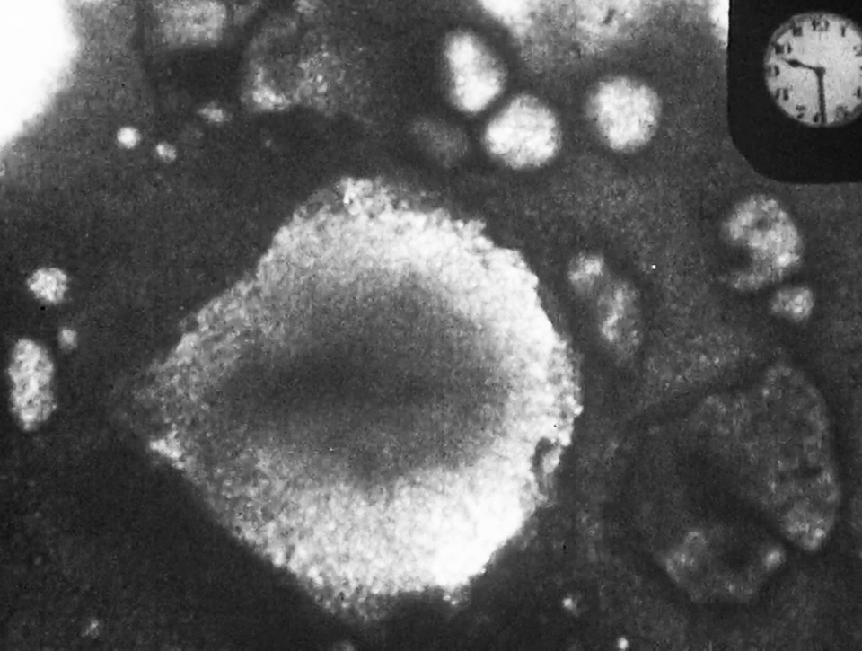

-

Imaging/Imagining Reproductive Crisis: time-lapse microscopy, animation and fertility discourse
Time-lapse microscopy has been at the centre of the way we know about reproductive biology since the early 20th century, and today continues to condition how scientists create images of reproductive cells in labs. This research examines the role of time-lapse in imaging the reproductive cell in the lab and shaping social imaginaries around fertility and reproduction more broadly. This is in the context of reports of a drop in fertility rates in Europe, shifting folk and science beliefs surrounding the 'biological clock' and racialised debates around the supposed urgencies or challenges of population replacement.
Through ethnographic visits to research labs the project investigates how the biological time of the cell, the labour time of the lab experiment and social conceptions of time, encompassed by notions of ‘crisis’ or ‘decline’, link up in the use of time-lapse. The project is also grounded in artistic uses of time-lapse and employs audiovisual and animation film to reflect on how the temporalities of reproduction and re/productive work are (re)constructed in feminist and queer artistic practice (including the pursuit of utopian, epic and speculative fictional directions and dimensions).
The project forms part of the DOROTHY post-doctoral fellowship program on the topic of ‘public health crisis’, and contributes to a shared societal understanding of how reproductive issues –from the selection of objects of lab research to questions of personal reproductive choice– stand at the center of public health concerns.DOROTHY Cofund Programme (2024-2027).
-

Postinternet Queer Reproductive Work & the Fixed Capital of Fertility
This doctoral research project situates the emergent computational and networked landscapes of assisted reproduction in a longer history of reproductive technologies and politics since the 1970s. Offering an innovative take on the dynamic interaction between sexuality and digital technologies, this thesis sets out how queer reproduction struggles are not just a glimmer haunting the IVF-centred heteronormative fertility clinic but structurally linked across the systems of accumulation that order capitalist expansion.
The concept of “post-internet queer reproductive work” fuses three scholarly traditions: the study of queer work, theorizations of reproductive labor and the concept of fixed capital. Broadly, the dissertation proposes a reclaiming of the interface, network and viral as themes and modes of artistic response to reproductive governance: how have artists responded to the politics and policies of reproductive control?. The project layers critical, historical, audio-visual, auto- and poetic gazes as an artistic research method that centres bodily feeling and political becomings.Research funded by Kone Foundation and book published by Aalto ARTS press. Awarded the 2024 Doctoral Thesis Award by the School of Arts, Design and Architecture, Aalto University.
-

Artistic responses to public health crisis
I research and write about how other artists, activists and poets have responded to the management of public health crisis, or documented their experiences of reproductive and care work. My curatorial work has focused on HIV/AIDS-related queer video art in the UK during 1980s-1990s. I worked for filmmaker Pratibha Parmar as a researcher and archivist, and curated "Notes on Visual Justice: Pratibha Parmar’s early work" (LGBT Centre, Barcelona, 2020) and co-curated "Desire and Resistance: Pratibha Parmar" with Tania Adam (at the Reina Sofia Museum, Madrid, 2019).
Image: Reframing Aids (1987), courtesy Pratibha Parmar.
Read 'Revisiting the Aids-related video work of Pratibha Parmar and Isaac Julien' in ArtAsiaPacific Magazine
+ 'Contagion as Method', in Performance Research
+ watch a film on poetic responses to 19th century discourses on hygiene and disease
+ listen to a talk on historical pandemic narratives of contagion